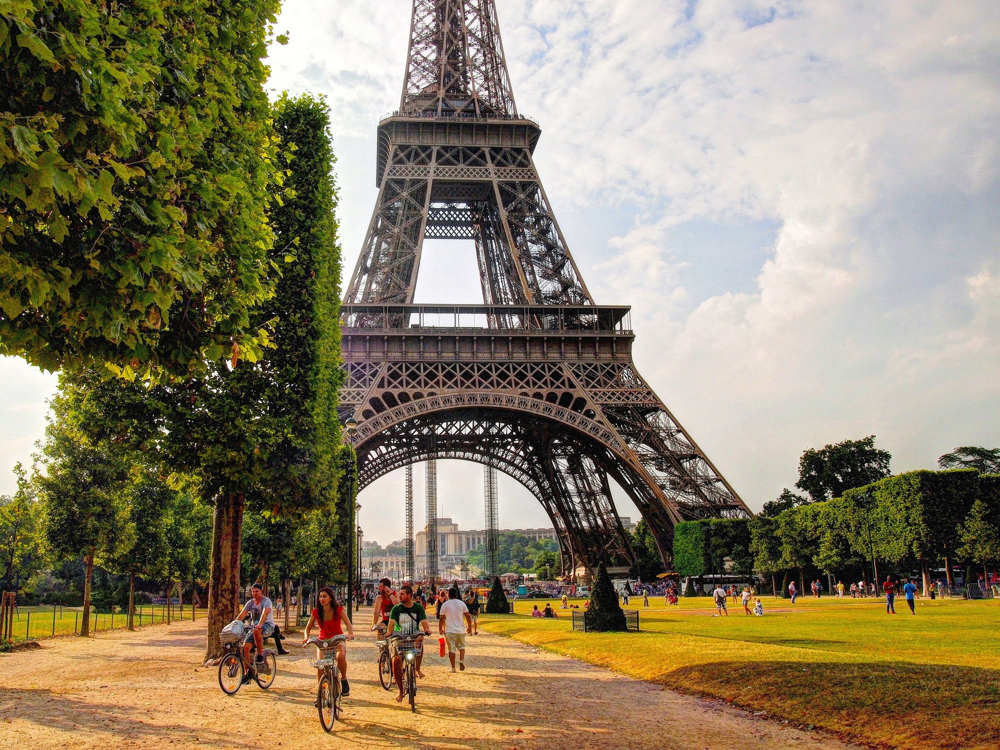
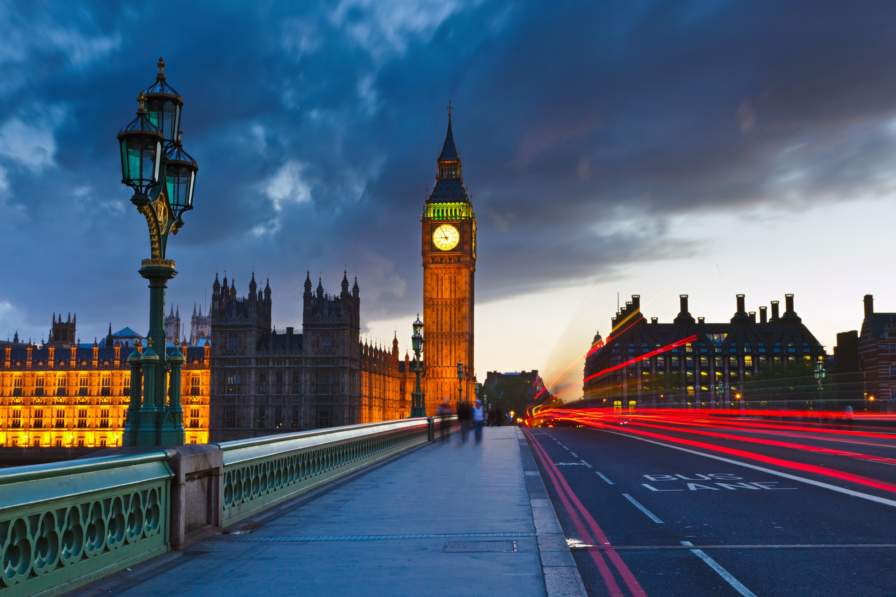
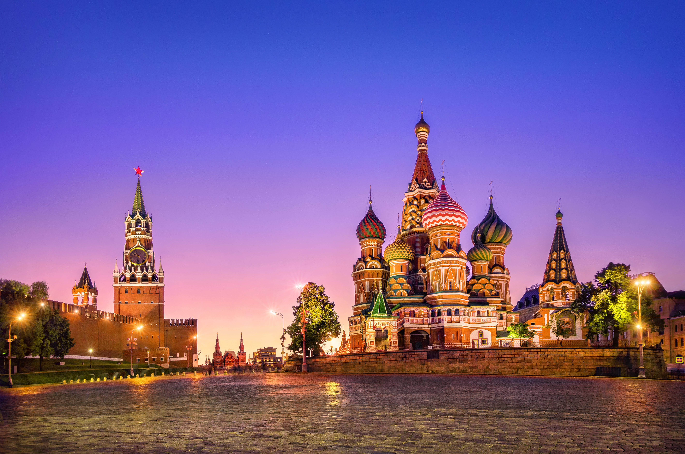
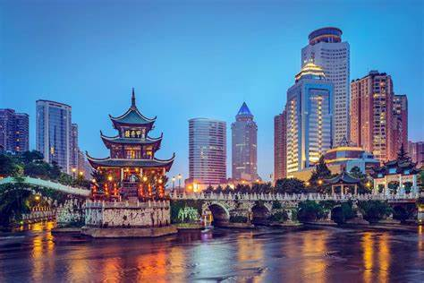

Confira aqui alguns dos nossos principais destinos de viagens!
|  | PARISParis é a capital da França e uma das cidades mais importantes e influentes do mundo. Do ponto de vista turístico, Paris é uma das cidades mais visitadas da Europa. Com o nosso guia de Paris você poderá descobrir todos os segredos da cidade, além de conseguir os melhores conselhos para viajar a Paris economizando. |
|  |
LONDRESCapital da Inglaterra, Londres é cosmopolita e vibrante. Na cidade você encontrará uma mistura de modernidade com pubs, casas de shows e restaurantes, e atrações que remetem a monarquia inglesa, como a troca de guarda, castelos e palácios. Por lá os turistas amam tirar fotos com as construções imponentes de fundo, como o Big Ben e o Palácio de Buckingham, residência da Rainha Elizabeth II. Não deixe de dar uma volta na roda-gigante London Eye. Lá do alto terá uma deslumbrante vista do rio Tâmisa e do Parlamento. Visite também a Abbey Road, conhecida como a rua dos Beatles, que virou até capa de disco. |
|  |
RUSSIAA Rússia está presente na Ásia e Europa ao mesmo tempo, tendo sua maior parte concentrada no leste europeu. Sua capital é Moscou e sua moeda, o rublo (RUB). O país tem fronteira marítima com o Japão e o Alasca e surpreende pelos seus enormes palácios, jardins, catedrais, bons restaurantes e cultura referencial! O crescimento do turismo na Rússia se deu logo após o período soviético, primeiro com o turismo doméstico e posteriormente com o turismo internacional. Dizem que os russos são frios. Este é um estereótipo equivocado. Um exemplo é a delicadeza dos movimentos de balés como Kirov e Bolshoi ou as tocantes melodias de Tchaikovsky. Sem falar da literatura de Pushkin, Dostoievski e Tolstoi. |
|  |
CHINAA grandiosa história da China inclui uma grande muralha, uma cidade proibida e milhares de guerreiros de terracota. As variadas paisagens deste país incluem o horizonte futurista de Xangai, os picos protuberantes de Zhangjiajie e as praias tropicais de Hainan. Mas a narrativa deste reino antigo começou desde tempos imemoriais. |